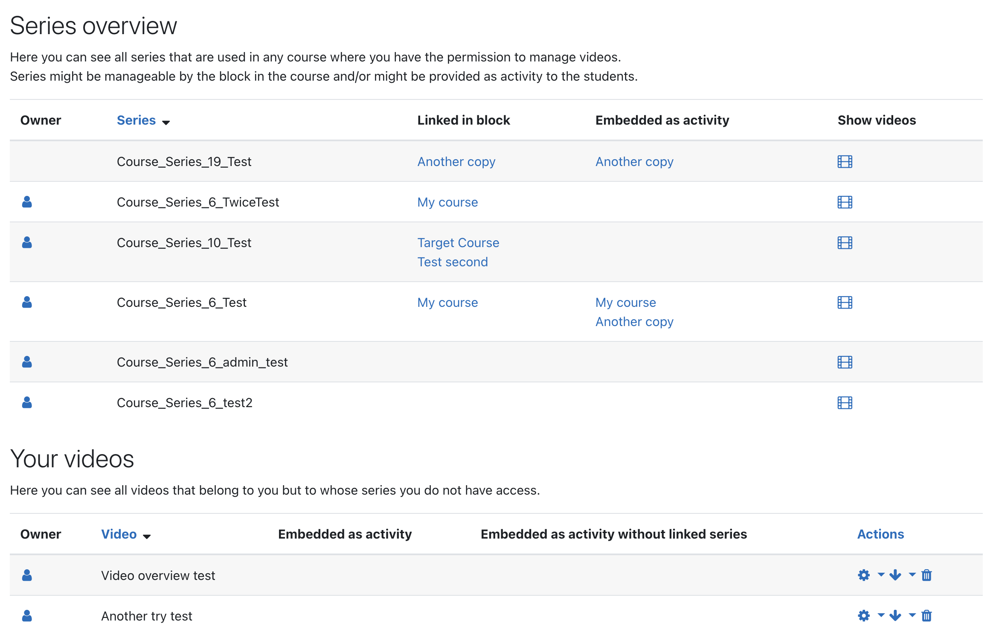

Global overview
The Opencast block allows teachers, to manage their series and videos in a single place.
If the block is added to the Dashboard page of a user, the user can see a list of all series he has read access to.
For each series, it is shown in which course it is used and which mod_opencast activities are associated with it.
The user can also inspect, which videos are contained in a series and manage them.
Furthermore, new videos can be added to a series.

Owner concept
If enabled, series and videos can be owned by user by setting user-specific ACLs. Owning a series/video allows the user, to always manage it in the global overview. The series/videos are even shown, if they are not used in any Moodle course. The ownership can be transferred to another user.